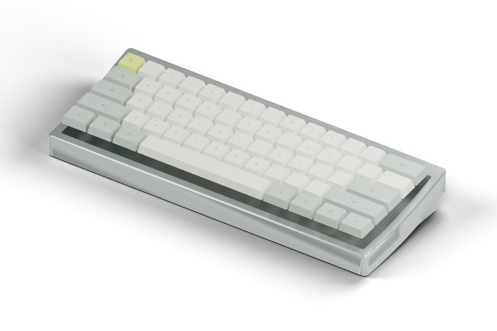
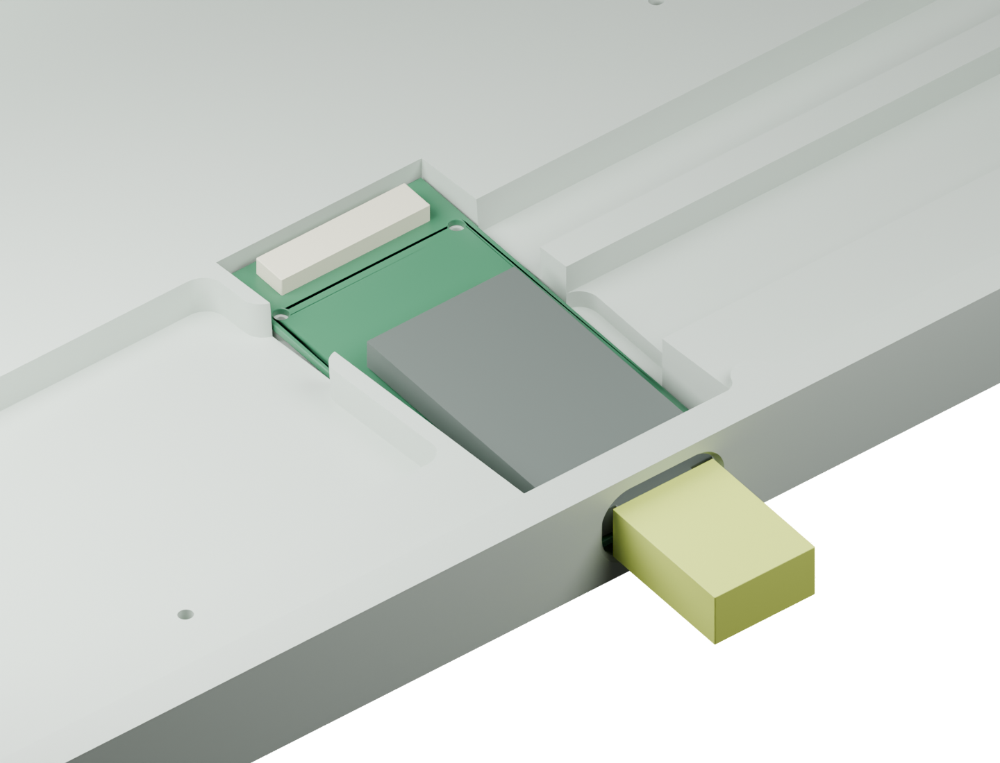

固件已经编译
普通版与 USB 校准版均有 UF2。真实驱动函数通过 960 组逻辑场景及 61 键同时按下、释放回归。
SOFTWARE / CHECKED
A FAMILIAR FORM. A DIFFERENT FEEL.
沿用 Unextended V1 的克制线条，以 NIZ 静电容结构重新构建内部。标准 ANSI 配列、6.25U 空格与 MX 十字轴键帽，让熟悉的日常工具多一种可能。
开源、可追溯、仍在开发。这里展示的是工程目标与当前证据，不是发售承诺。

A2 将 nano 移到低位接口仓，原生 Type-C 直接对外，不再藏在空格下。静电容高阻前端留在主板，内部排线只传控制、供电和缓冲 ADC。
需要内部改版 V1 外壳。模块为包络模型；装配、噪声、射频和续航仍须首件实测。默认非金属化 PC 壳。
NO BLACK BOX.
普通版与 USB 校准版均有 UF2。真实驱动函数通过 960 组逻辑场景及 61 键同时按下、释放回归。
SOFTWARE / CHECKED原生 KiCad、定位板、固件与报告在同一仓库。两块 PCB 均已布线，DRC 零错误、零未连接，仍有库与丝印警告；尚未通过实物验收。
HARDWARE / IN DEVELOPMENT不把编译成功当作实物成功。首件将验证噪声、蓝牙干扰、充电、续航和空闲后的第一下按键。
FIRST ARTICLE / PENDINGMAKE IT YOURS. UNDERSTAND IT FIRST.